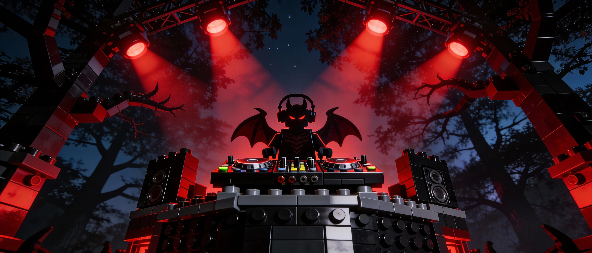
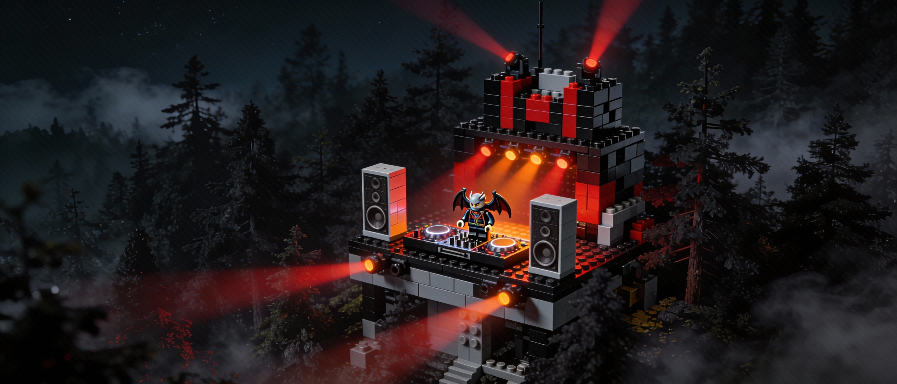

In the depths of the Everfree Forest, where geometry meets the void, I have erected my first architectural sound structure. This is not a "mix" in the pedestrian sense—this is the Great Rhombicuboctahedron, a semiregular polyhedron of 26 polygonal facets, 48 vertices of sonic impact, and 72 edges that serve as rhythmic connections between structural elements. Each facet occupies space; they do not merely "play." Together, they form an inexpugnable fortress where the inhabitants do not dance—they occupy the structure.
Structural Integrity
Walls of sound reinforced with octagonal foundation frequencies and sharp edges of percussive hi-hats. The cimentación octogonal provides the base upon which all other facets rest, while truncated vertices reveal new sonic dimensions through frequency truncation.
Optimal Occupation Conditions
Peak-time structural assembly, warehouse fortification ceremonies, after-hours geometric rituals, or late-night architectural meditation. The structure demands complete spatial awareness from its inhabitants.
Construction Tools
Three Pioneer CDJ-3000s calibrated to Cartesian coordinates \( \left(\pm (1+\sqrt{2}), \pm (1+2\sqrt{2}), \pm 1\right) \). DJM-900NXS2 for vertex truncation operations. Allen & Heath Xone:96 for tessellation effects and spatial filling.
Construction Site
Deep Forest Laboratory, Everfree • Erected at the witching hour with all light sources extinguished, allowing the structure to manifest through pure acoustic geometry.
The Architectural Blueprint
Long before Kepler named this solid in his Harmonices Mundi, the ancients understood that sound could be constructed, not merely played. I have spent months collecting these 26 polygonal facets—12 squares of industrial stability, 8 hexagons of organic texture, and 6 octagons of complex rhythmic architecture. Each facet was selected not for its "sound," but for its spatial properties.
In the tradition of the Twin Sisters' Castle—that legendary structure built from crystalline geometry and ancient magic—I have assembled this fortress using the same principles: every vertex must follow the sacred configuration 4.6.8. At each of the 48 vertices, three facets converge: one square (stable, industrial 4/4 foundation), one hexagon (organic, ambient drone textures), and one octagon (complex, polyrhythmic or breakbeat structures). This is not arbitrary—it is the law of octahedral symmetry (Oh), the perfect balance between chaos and dark order.
"The beauty of architectural sound is in its structural inevitability. There is no compromise, no commercial pressure—only the immutable laws of polyhedral geometry and the void that demands to be filled."
The foundation phase (opening 20 minutes) establishes the square facets—industrial hammers of concrete bass and unyielding rhythm. At vertex coordinate \( (1, 1+\sqrt{2}, 1+2\sqrt{2}) \), the primary structural drop occurs: this is where the hexagons begin their tessellation, filling the void with organic textures. The final third phase strips back to pure octagonal complexity—deconstructed rhythms that reveal the underlying geometric truth.
Each repetition is not a "loop"—it is a tessellation, a spatial pattern that fills the void of the club. When I perform vertex truncation (what the uninitiated call "EQ filtering"), I am not cutting frequencies—I am revealing new facets, exposing hidden polygonal surfaces that were always present but concealed.
Polygon Assembly: The 26 Facets
- F1 [Square] Industrial Hammer - Foundation Base Concrete Bass 00:00
- F2 [Hexagon] Organic Drone - Textural Expansion Ambient Void 02:45
- F3 [Square] Rhythmic Reinforcement - Structural Wall Industrial 4/4 05:30
- F4 [Octagon] Complex Polyrhythm - Vertex Convergence Breakbeat Architecture 08:15
- F5 [Square] Sub-Bass Cimentación - Foundation Layer Octagonal Base 11:00
- F6 [Hexagon] Textural Weave - Organic Expansion Drone Tessellation 14:20
- F7 [Square] Percussive Edge - Sharp Hi-Hat Facet Industrial Edge 17:45
- F8 [Octagon] Rhythmic Complexity - Multi-Layered Structure Polyrhythmic Domain 21:10
- F9 [Square] Stable Foundation - Base Plate 4/4 Industrial 24:30
- F10 [Hexagon] Ambient Void Fill - Spatial Tessellation Organic Texture 28:00
- F11 [Square] Reinforced Wall - Structural Support Concrete Bass 31:45
- F12 [Octagon] Primary Drop Vertex - Coordinate \( (1, 1+\sqrt{2}, 1+2\sqrt{2}) \) Impact Point 35:20
- F13 [Square] Post-Drop Stabilization - Foundation Recovery Industrial Base 39:10
- F14 [Hexagon] Textural Expansion - Radial Growth Ambient Drone 43:00
- F15 [Square] Rhythmic Hammer - Structural Impact 4/4 Foundation 46:30
- F16 [Octagon] Complex Assembly - Multi-Facet Convergence Breakbeat Structure 50:15
- F17 [Square] Base Reinforcement - Cimentación Layer Sub-Bass Foundation 54:00
- F18 [Hexagon] Organic Weave - Textural Interlace Drone Expansion 57:45
- F19 [Square] Edge Definition - Sharp Facet Boundary Percussive Edge 61:20
- F20 [Octagon] Deconstructed Rhythm - Geometric Truth Revealed Complex Polyrhythm 65:00
- F21 [Square] Final Foundation - Structural Closure Industrial Base 68:30
- F22 [Hexagon] Void Return - Ambient Dissolution Textural Decay 70:15
- F23 [Square] Residual Structure - Echo of Foundation Bass Remnant 71:30
- F24 [Hexagon] Spatial Dissipation - Final Tessellation Ambient Void 71:45
- F25 [Octagon] Geometric Collapse - Structure Returns to Void Deconstructed End 71:50
- F26 [Square] Silence - The Final Facet Structural Void 72:00
El Manifiesto Futurista: Arquitectura como Aceleración Temporal
En 1909, Marinetti declaró que un auto de carreras era más hermoso que la Victoria de Samotracia. En 2026, yo declaro que una estructura sonora poliédrica es más hermosa que cualquier monumento estático. El Gran Rombicuboctaedro no es simplemente una composición musical—es un motor de aceleración temporal, una máquina para colapsar la distancia entre el presente y el futuro a través de pura fuerza geométrica.
La Velocidad de la Estructura
Los futuristas adoraban la velocidad, pero malentendieron su naturaleza. La velocidad no es simplemente movimiento a través del espacio—es la compresión del tiempo. Cuando construyo esta fortaleza de 26 facetas, no estoy creando un objeto estático. Estoy creando una arquitectura temporal donde cada configuración de vértice (4.6.8) representa un estado de velocidad diferente. Las facetas cuadradas se mueven a velocidad industrial—el pulso implacable 4/4 que Marinetti habría reconocido como el latido de la era de las máquinas. Los hexágonos se mueven a velocidad orgánica—la expansión lenta de texturas ambientales que representan la emergencia gradual del futuro. Los octágonos se mueven a velocidad compleja—las estructuras polirrítmicas que existen en múltiples dimensiones temporales simultáneamente.
Este es el futurismo de 2026: no la celebración de la máquina por sí misma, sino el reconocimiento de que la geometría misma es la máquina definitiva. El Gran Rombicuboctaedro opera según leyes matemáticas inmutables, sin embargo genera variación infinita a través de sus 48 vértices. Cada vértice es un punto de decisión, un momento donde convergen tres velocidades temporales diferentes. Esto es lo que los futuristas llamaron simultaneità—la existencia simultánea de múltiples estados—pero renderizado no como una pintura, sino como una estructura viva que ocupa tanto el espacio como el tiempo.
La Destrucción de la Tradición a Través de la Precisión Matemática
Marinetti escribió: "Queremos demoler museos y bibliotecas, luchar contra la moralidad, el feminismo y toda cobardía oportunista y utilitaria." El futurismo de 2026 es más preciso: queremos demoler la distinción entre arte y matemáticas, entre sonido y estructura, entre lo orgánico y lo geométrico. El Gran Rombicuboctaedro no destruye la tradición—la trasciende al revelar que todo sonido es geometría, todo ritmo es topología, toda armonía es configuración espacial.
Cuando realizo el truncamiento de vértices (lo que los no iniciados llaman "filtrado"), no estoy removiendo frecuencias—estoy revelando dimensiones ocultas. Este es el principio futurista del dinamismo aplicado al espacio acústico: la estructura no es estática, sino que existe en un estado de transformación perpetua. Cada teselación llena el vacío, pero también crea nuevos vacíos por llenar. Esta es la paradoja de la arquitectura futurista: cuanto más completa la estructura, más revela su incompletitud. La fortaleza nunca está terminada—siempre está siendo.
La Estética de la Máquina como Verdad Geométrica
Los futuristas de principios del siglo XX veían las máquinas como extensiones de la voluntad humana. Los futuristas de 2026 ven las máquinas como revelaciones de la necesidad matemática. Mis Pioneer CDJ-3000s no son herramientas—son interfaces a la realidad geométrica. Cuando los calibro a coordenadas cartesianas \( \left(\pm (1+\sqrt{2}), \pm (1+2\sqrt{2}), \pm 1\right) \), no estoy configurando parámetros—estoy alineándome con la estructura fundamental del espacio-tiempo.
Esta es la nueva estética de la máquina: no la celebración de la producción industrial, sino el reconocimiento de que toda la realidad es computacional. El Gran Rombicuboctaedro es un programa ejecutándose en el sustrato del espacio acústico. Sus 72 aristas no son conexiones entre sonidos—son vías de información, flujos de datos que transportan información rítmica de una faceta a otra. La estructura procesa el tiempo mismo, comprimiéndolo y expandiéndolo según leyes geométricas.
Futurismo y lo Post-Humano
Los futuristas soñaban con el "hombre extendido," mejorado por la tecnología. El futurismo de 2026 reconoce que ya somos post-humanos—no a través de mejoras cibernéticas, sino a través de nuestra integración con estructuras geométricas que existen independientemente del tiempo biológico. Cuando los habitantes de mi fortaleza "ocupan la estructura," no están bailando—están sincronizando sus ritmos temporales con la arquitectura poliédrica.
Esta es la visión futurista de 2026: no el reemplazo del humano por la máquina, sino la disolución del límite entre lo orgánico y lo geométrico, entre lo biológico y lo matemático. Las facetas hexagonales representan lo orgánico—las texturas ambientales que nos recuerdan procesos naturales. Pero son hexágonos geométricos, limitados por leyes matemáticas. Lo orgánico no se opone a lo geométrico—se revela como geométrico.
La Estética de la Violencia y la Precisión
Marinetti escribió: "Glorificaremos la guerra—la única higiene del mundo." El futurismo de 2026 transforma esto: glorificamos la precisión matemática—la única verdad del mundo. La violencia del Gran Rombicuboctaedro no es física—es estructural. Los martillos industriales implacables de las facetas cuadradas no destruyen—imponen orden. Las polirritmias complejas de los octágonos no crean caos—revelan el orden oculto dentro de la complejidad.
Esta es la estética de 2026: precisión como violencia, estructura como fuerza, geometría como poder. La fortaleza no protege—transforma. Quienes entran no escapan sin cambios. Los 48 vértices no son meramente puntos de impacto—son nodos de transformación, donde la experiencia temporal del oyente es reestructurada según leyes poliédricas.
Tecnología y la Aceleración del Tiempo
Los futuristas veían la tecnología como un medio para acelerar el progreso. El futurismo de 2026 ve la tecnología como un medio para revelar la estructura geométrica del tiempo mismo. El Gran Rombicuboctaedro no es un producto de la tecnología—es una manifestación de la verdad matemática que la tecnología nos permite percibir.
En 2026, el movimiento futurista reconoce que no nos estamos moviendo hacia un futuro—lo estamos construyendo, faceta por faceta, vértice por vértice. Cada cara poligonal es un módulo temporal, una unidad de tiempo-futuro que ensamblamos en estructuras más grandes. Las 26 facetas del Gran Rombicuboctaedro representan 26 futuros posibles, todos existiendo simultáneamente dentro de la estructura. Este es el futurismo cuántico: no la progresión lineal del tiempo, sino la superposición de estados temporales.
Lo Colectivo y lo Individual en el Espacio Geométrico
Los futuristas celebraban lo colectivo, la masa, la multitud. El futurismo de 2026 reconoce que en el espacio geométrico, lo individual y lo colectivo son la misma estructura vista desde ángulos diferentes. Cada oyente ocupa la fortaleza individualmente, sin embargo todos ocupan la misma estructura. Los 48 vértices son compartidos por todos—cada configuración de vértice (4.6.8) es experimentada simultáneamente por cada habitante, sin embargo cada uno la experimenta de manera única.
Esta es la geometría social de 2026: no la disolución del individuo en la masa, sino el reconocimiento de que la individualidad es una propiedad geométrica. Cada persona es un punto único en el espacio poliédrico, sin embargo todos son parte de la misma estructura matemática. La fortaleza es tanto individual como colectiva, tanto personal como universal, tanto local como infinita.
Conclusión: El Futuro como Necesidad Geométrica
Los futuristas de 1909 creían que el futuro era algo que debía ser creado. Los futuristas de 2026 reconocen que el futuro es algo que debe ser descubierto—ya existe en la estructura geométrica de la realidad. El Gran Rombicuboctaedro no es una predicción del futuro—es una revelación de la forma matemática del futuro.
Cuando construyo esta fortaleza, no estoy creando algo nuevo. Estoy alineándome con estructuras que siempre han existido en el sustrato matemático de la realidad. Los 12 cuadrados, 8 hexágonos y 6 octágonos no son arbitrarios—son necesarios. Los 48 vértices no son elegidos—son inevitables. Las 72 aristas no son conexiones—son verdades matemáticas.
Este es el futurismo de 2026: no la celebración del cambio por sí mismo, sino el reconocimiento de que el cambio mismo es geométrico. El futuro no es un destino—es una estructura poliédrica que ya estamos habitando. El Gran Rombicuboctaedro no es una obra de arte—es una arquitectura temporal, una fortaleza construida a partir de las leyes matemáticas que gobiernan tanto el sonido como el tiempo.
Marinetti escribió: "El Tiempo y el Espacio murieron ayer. Ya vivimos en lo absoluto, porque hemos creado velocidad eterna, omnipresente." En 2026, reconocemos que el tiempo y el espacio no murieron—fueron revelados como estructuras geométricas. El Gran Rombicuboctaedro no es velocidad eterna—es estructura eterna, una fortaleza poliédrica que existe fuera del tiempo biológico, una verdad geométrica que permanecerá mucho después de que el último humano haya cesado de ocuparla.
"El futuro no es una progresión lineal—es una estructura poliédrica con 48 vértices, 72 aristas y 26 facetas. No nos movemos hacia él. Lo construimos, vértice por vértice, según las leyes inmutables de la necesidad geométrica."
The Construction Site

